HUMANLIKE AI PLAYTEST
달빛 틀린그림찾기 · AI 협동 플레이 영상
두 실제 브라우저 AI가 사람처럼 배회하고 멈춰 고민하며, 큰 오답 X를 공유하고 랜덤 힌트로 남은 정답 하나만 확인합니다. 상대 커서 궤적까지 담은 67초 내부 테스트 녹화입니다.
Humanlike AI 영상 보기 →
INTERACTIVE AUDIO PREVIEW
테트리스 배틀 · BGM & SFX
게임에 적용된 배틀·대기실 BGM과 이동, 회전, 하드드롭, 테트리스, 가비지, 아이템, 승패 효과음을 직접 재생합니다.
오디오 들어보기 →
AI PLAYTEST · STAGE 1
달빛 주방열차 · AI 대 AI 플레이 영상
첫 주문 완주 후 두 번째 웨이브에서 AI 둘이 서로 다른 주문을 맡아 동시에 움직이고, 2번 역에서 누적 3개 주문을 배식하는 2분 16초 녹화입니다.
Stage 1 영상 보기 →
INTERACTIVE UI CONCEPT
끝말잇기 배틀 · 전장 및 타이머 A/B
내 전장과 상대 전장, 동적 전투 족보와 함께 중앙 대형 타이머(A)·입력창 인접 타이머(B)를 즉시 전환해 비교하는 반응형 시안입니다.
시안 열기 →
별빛 우편탑 키아트
LAN 2인 협동 등반 게임 · 160×96 SVG · Canvas/CSS 공통 팔레트

런처 카드 키아트
A 로봇은 청록색 삼각 표식, B 로봇은 산호색 원형·두 점 표식으로 역할을 구분합니다. 중앙 발사대와 관측 접시는 두 플레이어의 공동 목표를 나타냅니다.
#15213A
#62D6E8
#FF8D78
#FFD97A
#64DC96
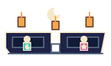
달빛 주방열차 런처 키아트
달빛 야시장 열차의 두 객차와 중앙 연결 발판, 초승달·별 역할 앞치마를 입은 두 승무원, 호박색 종이등을 표현합니다.
#111A36
#202348
#49C9BE
#D977A8
#F4A64A
#F5E9C9
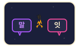
끝말잇기 배틀 런처 키아트
두 플레이어의 독립 끝말 체인을 말풍선으로 구분하고, 중앙의 금색 글자 타일 충돌로 가비지 공격을 표현합니다.
#1A1F3A
#A855F7
#EC4899
#F59E0B
#F5E9C9
달빛 주방열차 GPT Image 에셋
재료 상태, 조리 설비, 완성 요리와 두 승무원을 구분하기 쉽도록 생성한 원본 시트와 게임용 atlas입니다.
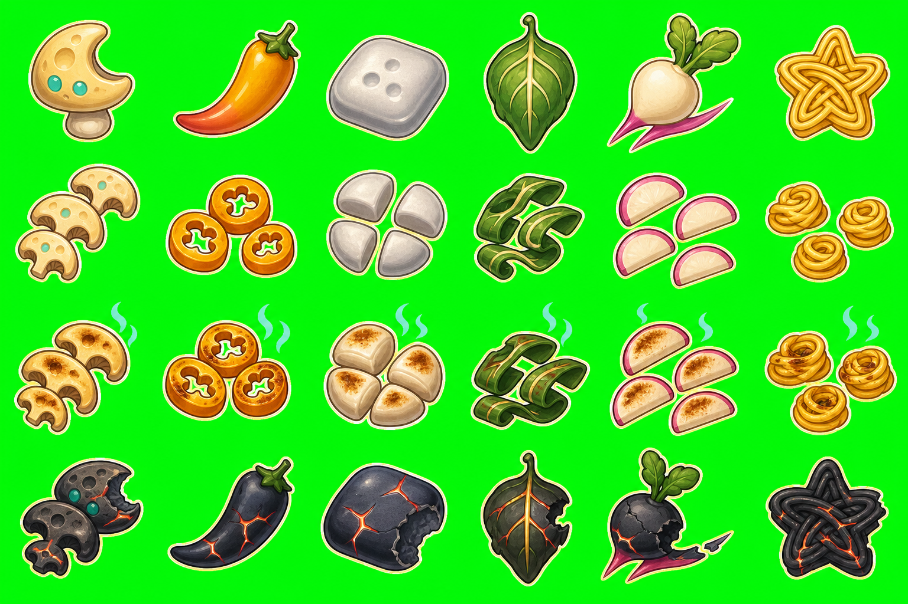
재료와 조리 상태
달버섯, 노을고추, 은빛반죽, 등불잎, 혜성무, 별국수의 네 상태를 색과 실루엣으로 구분합니다.
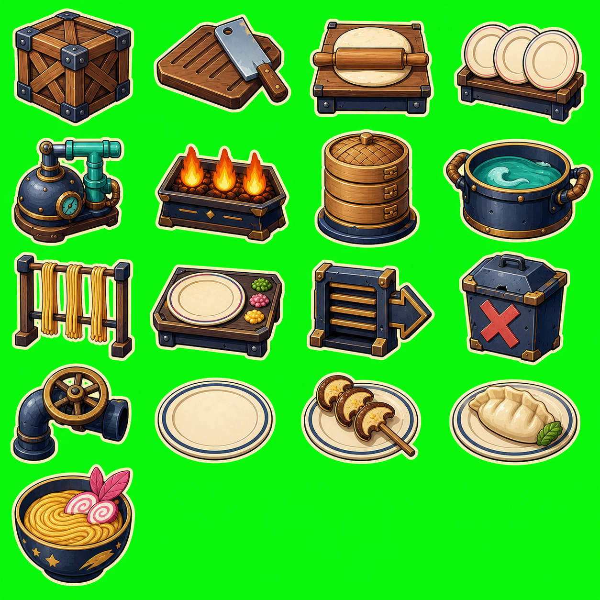
설비·접시·완성 요리
재료 상자부터 화로, 찜기, 냄비, 플레이팅, 배식대까지 각 설비의 기능이 한눈에 드러나도록 구성했습니다.
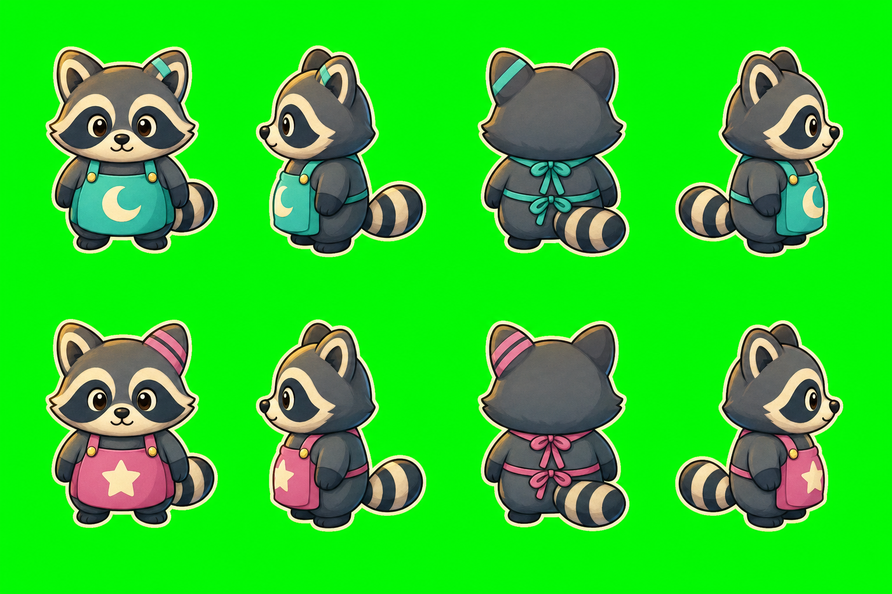
두 승무원과 네 방향
청록 초승달 P1과 분홍 별 P2를 앞치마 문양과 역할색으로 이중 구분합니다.
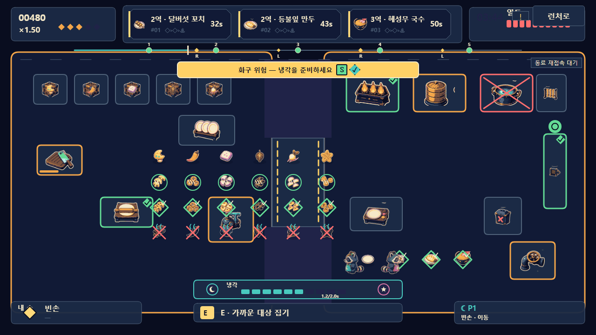
게임 적용 화면
49개 프레임을 15색 팔레트 WebP atlas로 최적화해 주문, 손에 든 재료, 바닥 아이템, 설비와 승무원에 적용했습니다.
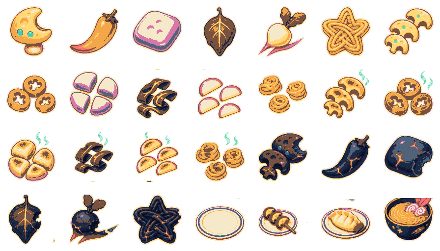
재료 atlas
재료 24상태, 빈 접시 1개, 완성 요리 3개를 담은 게임용 atlas입니다.
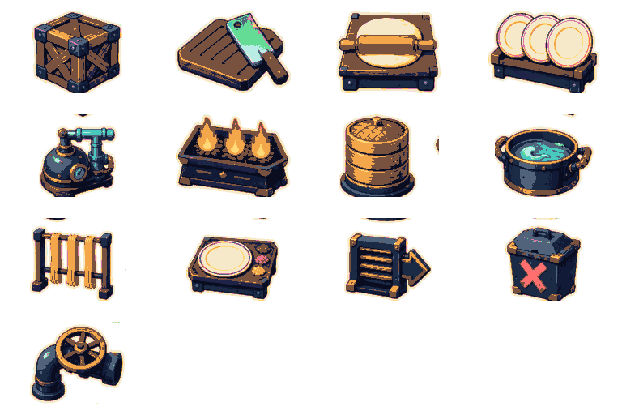
설비 atlas
13종 설비를 투명 배경과 8% 이상의 안전 여백으로 정규화했습니다.
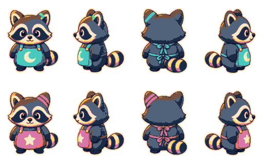
승무원 atlas
P1·P2 각각 아래, 왼쪽, 위, 오른쪽 방향을 담았습니다.
사천성 배틀 GPT Image 에셋
동일 배치 12×8 보드와 고빈도 아이템전을 위한 공용 타일 몸체, 24종 문양, 야간 정원 배경 및 실제 적용 화면입니다.
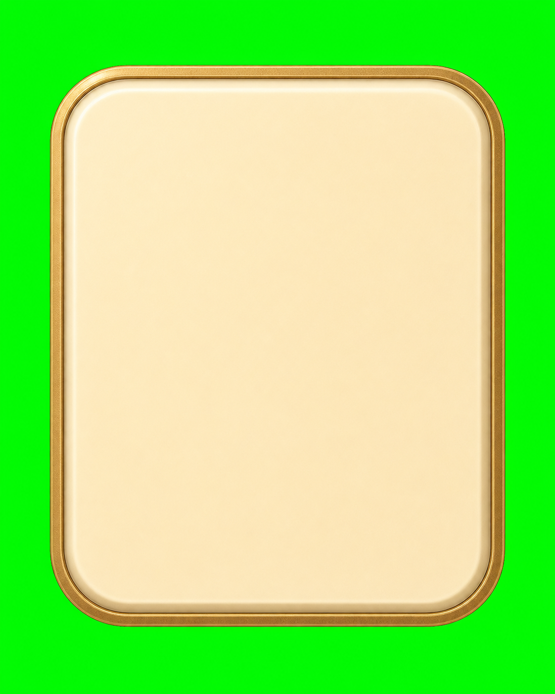
GPT Image 공용 타일 몸체
GPT Image로 만든 아이보리 세라믹·샴페인 골드 타일 몸체입니다. 투명화한 공용 몸체에 결정론적 SVG 문양을 합성합니다.
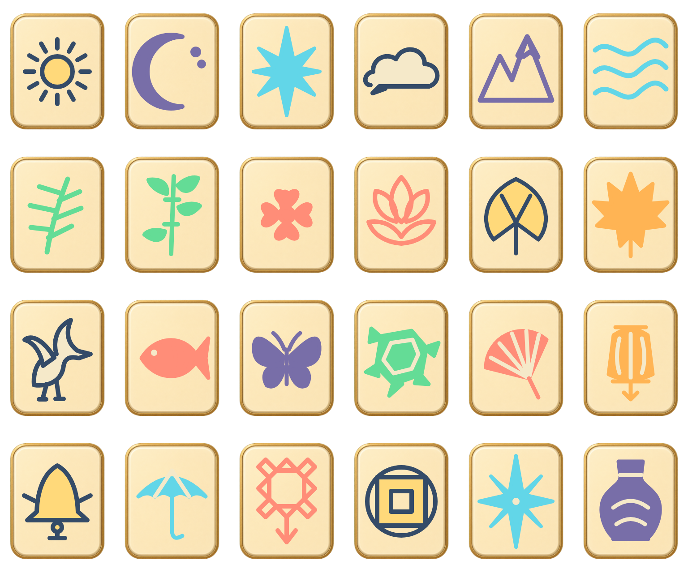
24종 타일 컨택트 시트
해·초승달·북극성·자연·동물·공예품 등 24개 고유 실루엣을 6×4로 정리했습니다. 각 타일은 게임에서 네 장씩 사용됩니다.
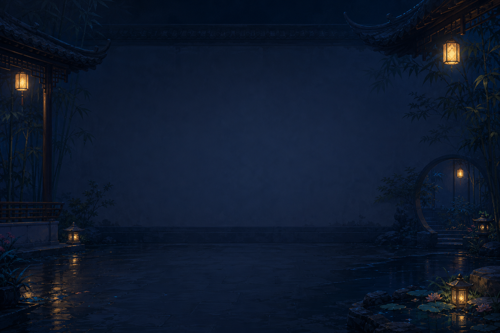
사천식 야간 정원 배경
중앙 보드 가독성을 위해 가운데 대비를 낮추고, 대나무·회랑·연못·등불은 화면 가장자리에 배치했습니다.
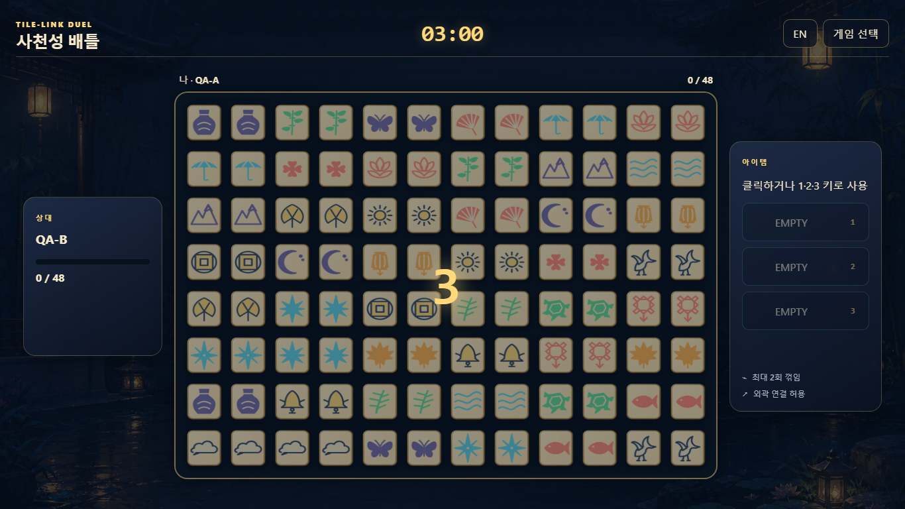
실제 게임 적용 화면
1366×768 한국어 화면에서 12×8 보드, 상대 진행률, 3개 아이템 슬롯, 효과 남은 시간과 3분 타이머를 함께 확인합니다.
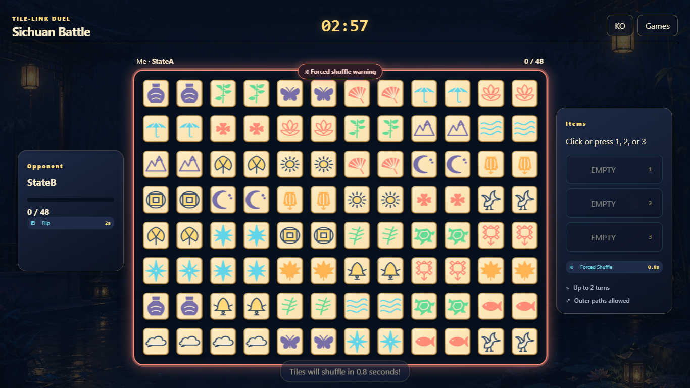
강제 셔플 공격 예고
강제 셔플은 실행 0.8초 전에 코랄 테두리·배지·토스트로 예고되어 정화 아이템으로 대응할 수 있습니다.
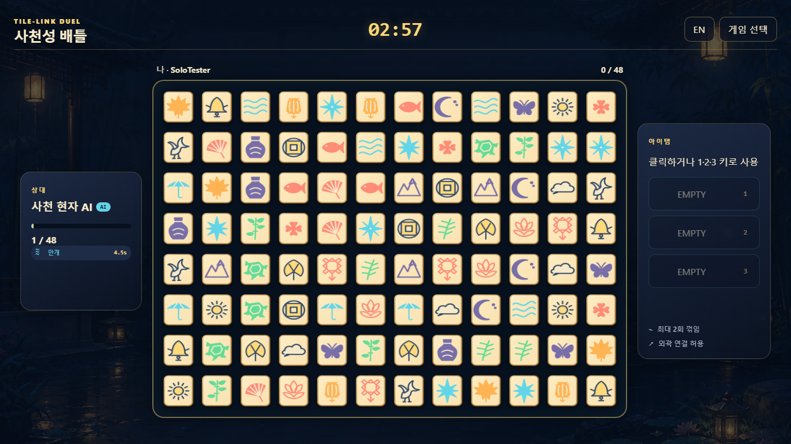
AI 아이템 대전
인증된 AI가 실제 연결 가능한 짝을 제거하고 7종 아이템을 사용하는 보통 난이도 1인 대전 화면입니다.